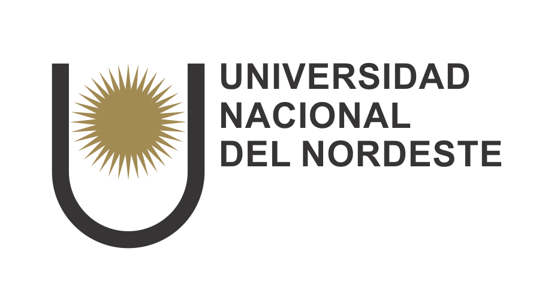
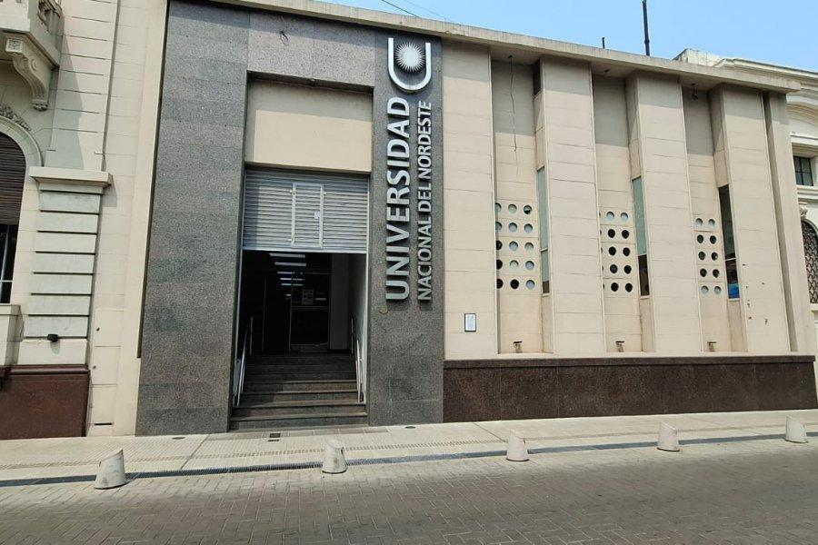
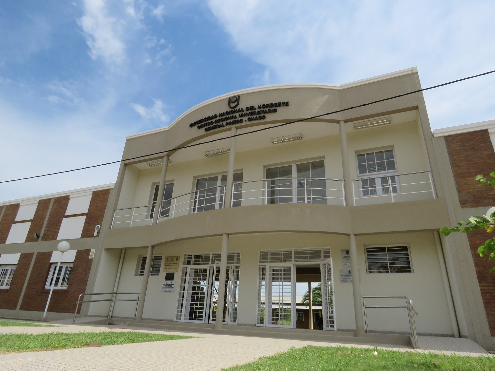

Universidad Nacional del Nordeste (UNNE)

La Universidad Nacional del Nordeste (UNNE) constituye una de las instituciones públicas de educación superior más relevantes del nordeste argentino. Su trayectoria académica, científica y cultural se encuentra estrechamente vinculada con el desarrollo de las provincias del Chaco y Corrientes, donde mantiene sus principales sedes universitarias. Desde su creación, la institución ha desempeñado un papel fundamental en la formación de profesionales, la producción de conocimientos científicos y la promoción de iniciativas orientadas a responder a las necesidades sociales, económicas y culturales de la región.
La UNNE en Corrientes, capital de la provincia homónima
Corrientes constituye el otro gran núcleo de actividad académica de la Universidad Nacional del Nordeste. La ciudad posee una larga tradición educativa y universitaria, y su vinculación histórica con la institución ha permitido consolidar una importante oferta de carreras de grado, actividades de investigación y servicios destinados a la comunidad.

La UNNE en Resistencia, provincia del Chaco
La presencia de la UNNE en Resistencia favorece la formación de profesionales en disciplinas vinculadas con la ingeniería, la arquitectura, las ciencias económicas, las humanidades y las artes, entre otras áreas. Esta diversidad académica permite que estudiantes con diferentes intereses y vocaciones encuentren oportunidades para desarrollar sus capacidades y construir una trayectoria profesional.

Entre las Facultades de ambas provincias se destacan:
| Facultades | Ubicación | Horarios de Atención | Mas información |
| Facultad de Arquitectura y Urbanismo | Av. Las Heras 727, Resistencia Chaco | Lunes a viernes de 8:00 a 12:00 y de 16:00 a 20:00 | Facultad de Arquitectura y Urbanismo |
| Facultad de Ingeniería | Av. Las Heras 727, Resistencia Chaco | Lunes a viernes de 8:00 a 12:00 hs y de 16:00 a 20:00 hs. | Facultad de Ingeniería |
| Facultad de Ciencias Económicas | Av. Las Heras 727, Resistencia Chaco | Lunes a viernes: 08:00 a 20:00 hs Sábados: 08:00 a 12:00 hs | |
| Facultad de Ciencias Exactas y Naturales y Agrimensura | Av. Libertad 5460 / 5470 (Campus Universitario), Corrientes Capital | Lunes a viernes de 8:00 a 12:00 hs. y de 13:30 a 18:30 hs. | FaCENA (Facultad de Ciencias Exactas y Naturales y Agrimensura) |
| Facultad de Medicina | Mariano Moreno 1240, Corrientes Capital | Lunes a viernes de 8:00 a 17:00 hs | Facultad De Medicina |
| Facultad de Odontología | Av. Libertad 5450, Corrientes Capital | Lunes a viernes de 7:00 a 14:00 horas | Facultad de Odontología (UNNE) |
| Facultad de Ciencias Veterinarias | Sargento Cabral 2139, Corrientes Capital | Lunes a viernes de 08:00 a 14:00 hs. | Facultad de Ciencias Veterinarias (UNNE) |